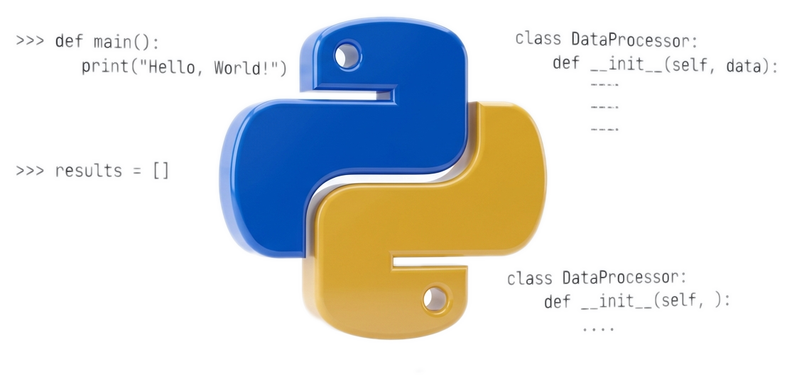
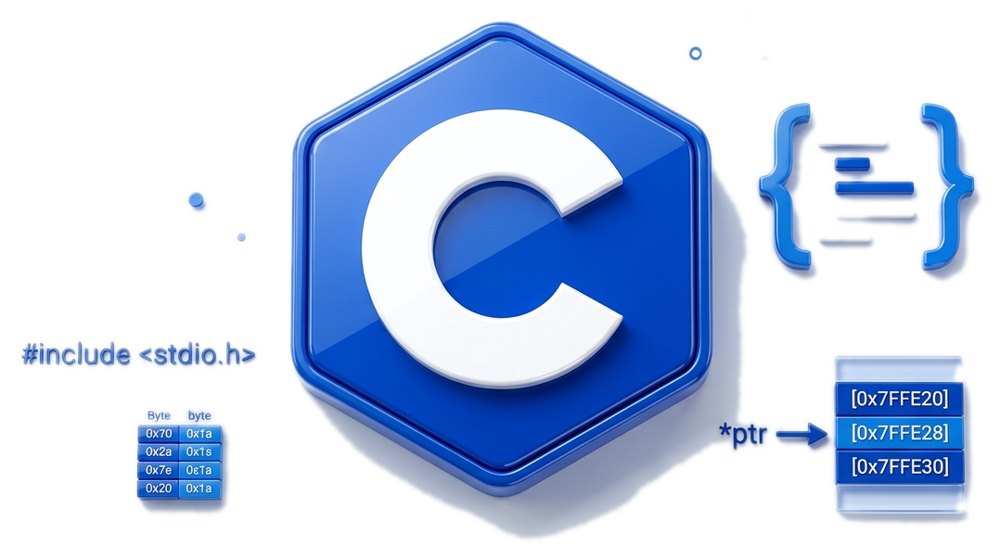
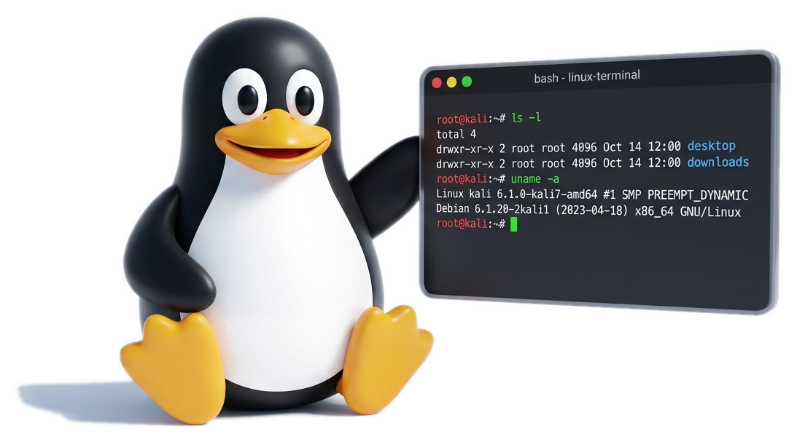

01
点击下方步骤条按需切换阶段 · 循序渐进构建网安实战能力
四阶实战进阶成长体系
第一阶段：最小化起步准备（代码与环境）
配齐 Python、Kali 虚拟机与浏览器 F12 工具即可快速开干，无需盲目死磕高深理论。

Python 编程基础
解密脚本与自动化 Exploit 必备
学习目标：掌握字符串、列表、字典、函数和文件读写，能读懂并修改简单脚本即可，无需死记高级语法。

C 语言基础（按需选学）
Reverse 逆向与 Pwn 二进制必备
学习目标：主攻 Web 或 Misc 前期可先跳过；主攻底层方向需理解指针、结构体、内存布局与函数调用栈。
展开推荐学习资源与教程 ▾

Linux 与命令行基础
安全工具运行与靶场交互基石
环境搭建：推荐 Kali Linux（WSL2 或虚拟机），掌握常用命令（浏览文件、查找文本、权限管理、SSH 远程连接）。
展开推荐学习资源与教程 ▾
- OverTheWire: Bandit（游戏闯关学命令） ↗
- 推荐方式：Win11 WSL2 或 VMware 虚拟机
- 核心思路：做题时随用随查，边练边记
AI × CO-PILOT
AI 辅助学习与智能体协同（点击展开工具推荐）
▾
在现代网安学习中，学会向 AI 提问能帮你跨越环境配置与报错壁垒。切记用它来“辅助理解底层原理”，而不是直接当“伸手党”要答案。
国内主流 LLM (直连免折腾)
DeepSeek 深度求索
Kimi
智谱清言 GLM
豆包
DeepSeek 代码推理与逻辑分析极强；Kimi 长文本处理优秀，适合直接通读大篇源码。
海外前沿 LLM (综合与编码天花板)
Claude 3.5 / 3.7
ChatGPT
Gemini
Claude 逆向逻辑还原与代码重构极佳；Gemini 超大上下文适合跨文件分析大型代码库。
AI 原生 IDE (新手首选神器)
Cursor
Trae (字节免费直连)
Windsurf
感知项目上下文，在写 Python 解密脚本或 Exp 时结合代码自动纠错并就地修复运行报错。
终端自主 Agent (进阶利器)
直接接管终端环境，通过 MCP 协议联动 IDA、Burp Suite 进行半自动化逆向分析与漏洞审计。
02
知其黑，守其白 —— 技术本无善恶，法律与敬畏是唯一的准绳
网络安全极客公约与法律红线
🔍
探究底层原理，独立排查报错
深入理解操作系统与网络协议底层机制。做题遇到报错先查官方文档与日志，绝不死背参数当“脚本小子”，坚决杜绝盲目求答案的“伸手党”思维。
法律绝对红线
恪守法律红线，绝不越雷池一步
《中华人民共和国网络安全法》第二十七条明文规定：任何技术学习与切磋必须严格限制在已获授权的合法靶场或本地沙盒环境中进行。严禁对未获书面授权的学校内网或互联网任何真实资产发起扫描、探测或漏洞利用。
03
完成一项勾选一项，进度自动保存在本地浏览器
新生实战通关打卡清单
ACHIEVEMENT // PROGRESSION_TRACKER
新手阶段通关任务 (8 项核心实操)
完成度: 0% (0/8)